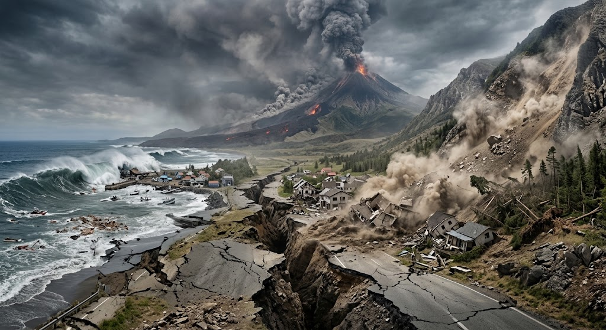

ธรณีพิบัติภัย
ธรณีพิบัติภัยเป็นภัยธรรมชาติที่เกิดจากกระบวนการเปลี่ยนแปลงทางธรณีวิทยาของโลก ซึ่งอาจส่งผลกระทบต่อชีวิต ทรัพย์สิน โครงสร้างพื้นฐาน และสิ่งแวดล้อม ธรณีพิบัติภัยมีหลายประเภท เช่น แผ่นดินไหว ภูเขาไฟระเบิด ดินถล่ม และสึนามิ ภัยแต่ละประเภทมีสาเหตุและลักษณะการเกิดแตกต่างกัน จึงจำเป็นต้องศึกษากระบวนการเกิดและปัจจัยที่เกี่ยวข้องเพื่อเตรียมพร้อมรับมือกับเหตุการณ์ที่อาจเกิดขึ้น
แผ่นดินไหวเกิดจากการปลดปล่อยพลังงานภายในโลกอย่างฉับพลัน โดยส่วนใหญ่เกี่ยวข้องกับการเคลื่อนที่ของแผ่นธรณีภาคและการเลื่อนตัวของรอยเลื่อน เมื่อเกิดแผ่นดินไหวจะทำให้เกิดคลื่นไหวสะเทือนที่แพร่กระจายออกไปจากจุดกำเนิด ส่วนภูเขาไฟระเบิดเกิดจากการที่แมกมาและก๊าซภายในโลกเคลื่อนตัวขึ้นสู่พื้นผิวโลกและปะทุออกมา สำหรับดินถล่มเกิดจากมวลดิน หิน หรือเศษวัสดุบนพื้นที่ลาดชันเคลื่อนตัวลงตามแรงโน้มถ่วง โดยอาจมีฝนตกหนักหรือการเปลี่ยนแปลงสภาพพื้นที่เป็นปัจจัยกระตุ้น
การศึกษาธรณีพิบัติภัยมีความสำคัญต่อการลดความสูญเสียและเพิ่มความปลอดภัยให้แก่ประชาชน โดยสามารถนำความรู้ไปใช้ในการจัดทำแผนที่พื้นที่เสี่ยงภัย การพัฒนาระบบเฝ้าระวังและแจ้งเตือนภัย รวมถึงการวางแผนการก่อสร้างอาคารและการใช้ประโยชน์ที่ดินให้เหมาะสม นอกจากนี้ประชาชนควรมีความรู้เกี่ยวกับการเตรียมตัวก่อนเกิดภัย การปฏิบัติตนขณะเกิดภัย และการฟื้นฟูหลังเกิดภัย เพื่อช่วยลดผลกระทบจากธรณีพิบัติภัยที่อาจเกิดขึ้นในอนาคต